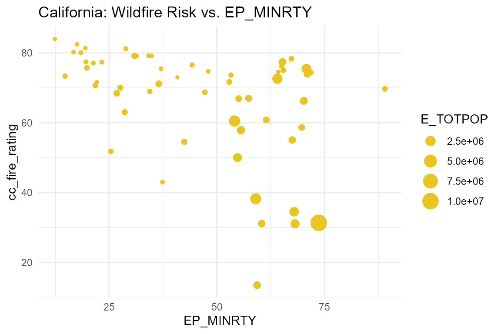
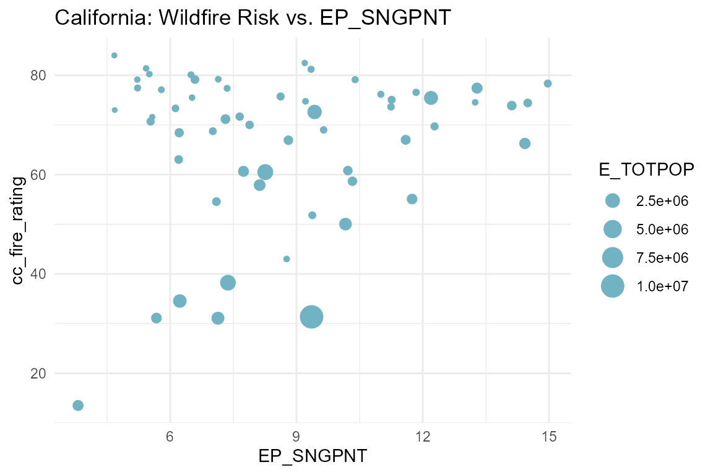

final-writeup.RmdSocial vulnerability describes factors that may weaken a community’s ability to prepare for and respond to widescale hazardous events, such as natural disasters, disease outbreaks, and chemical spills. The CDC/ATSDR Social Vulnerability Index (SVI) is a dataset compiled by the CDC/ATSDR that uses 16 U.S. census variables examining external stresses on human health and their potential detrimental effects within census tracts across the United States. It is important to narrow down possible stressors and identify communities that are the most vulnerable in order to prevent human suffering and provide support to those that need it most in times of disaster.
The natural disaster that this paper examines is wildfires. The wildfire risk rating data used in the analysis are sourced from ClimateCheck and based on three factors: (i) the probability of burning, (ii) the severity of a fire, and (iii) the projected risk on days with the worst conditions for fire spread.
For the purposes of minimizing space usage, data on states other than California were already filtered out from the 2018 SVI dataset; shapefile/geometry columns were also dropped.
First, we do some data pre-processing. Missing information are
encoded as -999s in the SVI, so we convert them to
NAs:
data(ca.svi)
svi <- ca.svi %>%
mutate_if(is.numeric, ~ ifelse(.x == -999, NA, .x))
svi
#> # A tibble: 8,041 × 124m
#> ST STATE ST_ABBR STCNTY COUNTY FIPS LOCATION AREA_SQMI E_TOTPOP M_TOTPOP
#> <chr> <chr> <chr> <chr> <chr> <chr> <chr> <dbl> <dbl> <dbl>
#> 1 06 CALIF… CA 06017 El Do… 0601… Census … 0 0 12 12
#> 2 06 CALIF… CA 06019 Fresno 0601… Census … 1.01 3298 232 232
#> 3 06 CALIF… CA 06029 Kern 0602… Census … 1.50 5498 289 289
#> 4 06 CALIF… CA 06029 Kern 0602… Census … 0.980 4061 839 839
#> 5 06 CALIF… CA 06029 Kern 0602… Census … 0.756 2196 204 204
#> 6 06 CALIF… CA 06029 Kern 0602… Census … 2.61 4116 217 217
#> 7 06 CALIF… CA 06031 Kings 0603… Census … 1.98 9121 388 388
#> 8 06 CALIF… CA 06031 Kings 0603… Census … 0.790 3356 378 378
#> 9 06 CALIF… CA 06037 Los A… 0603… Census … 0.616 11235 501 501
#> 10 06 CALIF… CA 06037 Los A… 0603… Census … 0.506 0 12 12
#> # ℹ 8,031 more rows9m
#> # ℹ 114 more variables: E_HU <dbl>, M_HU <dbl>, E_HH <dbl>, M_HH <dbl>,9m
#> # E_POV <dbl>, M_POV <dbl>, E_UNEMP <dbl>, M_UNEMP <dbl>, E_PCI <dbl>,
#> # M_PCI <dbl>, E_NOHSDP <dbl>, M_NOHSDP <dbl>, E_AGE65 <dbl>, M_AGE65 <dbl>,
#> # E_AGE17 <dbl>, M_AGE17 <dbl>, E_DISABL <dbl>, M_DISABL <dbl>,
#> # E_SNGPNT <dbl>, M_SNGPNT <dbl>, E_MINRTY <dbl>, M_MINRTY <dbl>,
#> # E_LIMENG <dbl>, M_LIMENG <dbl>, E_MUNIT <dbl>, M_MUNIT <dbl>, …9mThe SVI data are collected by census tracts, whereas the hazard risk data are collected by counties:
data(risk)
risk
#> # A tibble: 3,108 × 7m
#> GeoType StateFP GEOID County_name TotalPop state cc_fire_rating
#> <chr> <chr> <chr> <chr> <dbl> <chr> <dbl>
#> 1 County 01 01001 Autauga County 42497 Alabama 29
#> 2 County 01 01003 Baldwin County 171298 Alabama 35.3
#> 3 County 01 01005 Barbour County 19802 Alabama 27.4
#> 4 County 01 01007 Bibb County 17790 Alabama 28.5
#> 5 County 01 01009 Blount County 44382 Alabama 28.4
#> 6 County 01 01011 Bullock County 7893 Alabama 29.8
#> 7 County 01 01013 Butler County 15330 Alabama 30.9
#> 8 County 01 01015 Calhoun County 89556 Alabama 26.3
#> 9 County 01 01017 Chambers County 26484 Alabama 25.4
#> 10 County 01 01019 Cherokee County 21032 Alabama 26.3
#> # ℹ 3,098 more rows9mIn order to preserve information through the merge, I will be picking
a subset of the SVI columns that can be used in calculating the
percentage data, which will be accomplished through dividing the total
affected count (E_ starting variables) by the total unit
count in each region (as seen in the data dictionary calculation
descriptions). I also will be keeping the column that sums the flags
(F_TOTAL) of four different themes. All SVI variables of
interest are summarized below, as described by the data dictionary:
| variable name | description |
|---|---|
E_TOTPOP |
Population estimate, 2014-2018 ACS |
E_AGE17 |
People aged 17 and younger estimate, 2014-2018 ACS |
E_GROUPQ |
People in group quarters estimate, 2014-2018 ACS |
E_HH |
Households estimate, 2014-2018 ACS |
E_HU |
Housing units estimate, 2014-2018 ACS |
E_MINRTY |
Minority (all persons except white, non-Hispanic) estimate, 2014-2018 ACS |
E_MUNIT |
Housing in structures with 10 or more units estimate, 2014-2018 ACS |
E_SNGPNT |
Single parent household with children under 18 estimate, 2014-2018 ACS |
F_TOTAL |
Sum of flags for four themes: Socioeconomic Status, Household Composition, Minority Status/Language, and Housing Type/Transportation |
svi <- svi %>%
select(STCNTY, E_TOTPOP, E_AGE17, E_GROUPQ, E_HH, E_HU, E_MINRTY, E_MUNIT, E_SNGPNT, F_TOTAL)
svi
#> # A tibble: 8,041 × 10m
#> STCNTY E_TOTPOP E_AGE17 E_GROUPQ E_HH E_HU E_MINRTY E_MUNIT E_SNGPNT
#> <chr> <dbl> <dbl> <dbl> <dbl> <dbl> <dbl> <dbl> <dbl>
#> 1 06017 0 0 0 0 0 0 0 0
#> 2 06019 3298 0 3298 0 0 2632 0 0
#> 3 06029 5498 0 5498 0 0 4568 0 0
#> 4 06029 4061 0 4061 0 0 3305 0 0
#> 5 06029 2196 0 2196 0 0 1814 0 0
#> 6 06029 4116 0 4116 0 0 2658 0 0
#> 7 06031 9121 0 9121 0 0 7232 0 0
#> 8 06031 3356 0 3356 0 0 2544 0 0
#> 9 06037 11235 407 11235 0 0 8305 0 0
#> 10 06037 0 0 0 0 0 0 0 0
#> # ℹ 8,031 more rows9m
#> # ℹ 1 more variable: F_TOTAL <int>9mAfter getting the appropriate variables, we calculated the
corresponding estimated percentages for each county by grouping by the
county and performing the following operations within
summarize:
cty.svi <- svi %>%
group_by(STCNTY) %>%
summarize(
E_TOTPOP = sum(E_TOTPOP, na.rm=T),
EP_AGE17 = sum(E_AGE17, na.rm=T) / sum(E_TOTPOP, na.rm=T) * 100,
EP_GROUPQ = sum(E_GROUPQ, na.rm=T) / sum(E_TOTPOP, na.rm=T) * 100,
EP_MINRTY = sum(E_MINRTY, na.rm=T) / sum(E_TOTPOP, na.rm=T) * 100,
EP_MUNIT = sum(E_MUNIT, na.rm=T) / sum(E_HU, na.rm=T) * 100,
EP_SNGPNT = sum(E_SNGPNT, na.rm=T) / sum(E_HH, na.rm=T) * 100,
F_TOTAL = sum(F_TOTAL, na.rm=T)
)
cty.svi
#> # A tibble: 58 × 8m
#> STCNTY E_TOTPOP EP_AGE17 EP_GROUPQ EP_MINRTY EP_MUNIT EP_SNGPNT F_TOTAL
#> <chr> <dbl> <dbl> <dbl> <dbl> <dbl> <dbl> <int>
#> 1 06001 1643700 21.0 1.96 68.2 21.5 7.13 539
#> 2 06003 1146 20.9 3.14 40.8 23.9 4.68 2
#> 3 06005 37829 15.4 9.73 21.3 2.97 5.79 13
#> 4 06007 227075 20.1 2.67 27.6 7.47 7.89 84
#> 5 06009 45235 17.2 1.10 18.4 1.17 6.49 16
#> 6 06011 21464 27.4 0.964 64.3 2.74 13.2 8
#> 7 06013 1133247 23.1 0.886 55.6 12.4 8.13 213
#> 8 06015 27424 21.7 11.3 37.4 3.20 8.77 20
#> 9 06017 186661 20.4 0.954 21.8 4.85 5.54 19
#> 10 06019 978130 28.6 1.71 70.2 7.23 14.4 704
#> # ℹ 48 more rows9mFinally, we can merge the CDC/ATSDR SVI and wildfire risk data together:
d <- risk %>%
select(GEOID, County_name, state, cc_fire_rating) %>%
inner_join(cty.svi, by=c("GEOID" = "STCNTY"))
d
#> # A tibble: 58 × 11m
#> GEOID County_name state cc_fire_rating E_TOTPOP EP_AGE17 EP_GROUPQ EP_MINRTY
#> <chr> <chr> <chr> <dbl> <dbl> <dbl> <dbl> <dbl>
#> 1 06001 Alameda Cou… Cali… 31.1 1643700 21.0 1.96 68.268.2
#> 2 06003 Alpine Coun… Cali… 73 1146 20.9 3.14 40.840.8
#> 3 06005 Amador Coun… Cali… 77.1 37829 15.4 9.73 21.321.3
#> 4 06007 Butte County Cali… 70 227075 20.1 2.67 27.6.6
#> 5 06009 Calaveras C… Cali… 80.1 45235 17.2 1.10 18.418.4
#> 6 06011 Colusa Coun… Cali… 74.5 21464 27.4 0.964 64.364.3
#> 7 06013 Contra Cost… Cali… 57.9 1133247 23.1 0.886 55.655.6
#> 8 06015 Del Norte C… Cali… 43 27424 21.7 11.3 37.437.4
#> 9 06017 El Dorado C… Cali… 70.7 186661 20.4 0.954 21.821.8
#> 10 06019 Fresno Coun… Cali… 66.3 978130 28.6 1.71 70.270.2
#> # ℹ 48 more rows9m
#> # ℹ 3 more variables: EP_MUNIT <dbl>, EP_SNGPNT <dbl>, F_TOTAL <int>9mFor each of the 6 aggregated SVI variables, I will be visualizing the SVI variable on the \(x\)-axis and the wildfire risk on the \(y\)-axis. The following function was created to aid in visualization:
myplot <- function(varname, ...) {
d %>%
ggplot(aes(x = !!as.symbol(varname), y = cc_fire_rating, size = E_TOTPOP)) +
geom_point(...) +
labs(title = paste0("California: Wildfire Risk vs. ", varname)) +
theme_minimal()
}
myplot("EP_AGE17", color = "#ea5c00")
cor(d$EP_AGE17, d$cc_fire_rating)
#> [1] 0.05061657There is a very weak correlation of 0.051 between
EP_AGE17 and cc_fire_rating. The percentages
range from 13 to 31%. There seems to be an outlier for the county with
the lowest fire rating value and the lowest E_AGE17 value,
and we find out this is San Francisco County:
myplot("EP_GROUPQ", color = "#e29e00")
cor(d$EP_GROUPQ, d$cc_fire_rating)
#> [1] 0.123204There is a very weak correlation of 0.123 between
EP_GROUPQ and cc_fire_rating. The percentages
range from 0 to 32%. There seems a few outliers, most particularly would
be the one with the highest EP_GROUPQ value, and we find
out this is Lassen County:
myplot("EP_MINRTY", color = "#e8c520")
cor(d$EP_MINRTY, d$cc_fire_rating)
#> [1] -0.4149933There is a moderate negative correlation of -0.415 between
EP_MINRTY and cc_fire_rating. The percentages
range from 12 to 89%. The county with the highest EP_MINRTY
value turns out to be Imperial County:
myplot("EP_MUNIT", color = "#9ebe91")
cor(d$EP_MUNIT, d$cc_fire_rating)
#> [1] -0.7830447There is a moderately strong negative correlation of -0.783 between
EP_MUNIT and cc_fire_rating. The percentages
range from 1 to 36%. The county with the highest EP_MINRTY
value turns out to be San Francisco County:
myplot("EP_SNGPNT", color = "#71b3c2")
cor(d$EP_SNGPNT, d$cc_fire_rating)
#> [1] 0.1659458There is a weak correlation of 0.166 between EP_SNGPNT
and cc_fire_rating. The percentages range from 4 to 15%.
The county with the lowest EP_SNGPNT value turns out to be
San Francisco County:
myplot("F_TOTAL", color = "#3c9ab2") +
scale_x_log10()
All but one of the F_TOTAL values are between 1 and
1000. The county with the highest F_TOTAL value turns out
to be Los Angeles County:
d %>% arrange(desc(F_TOTAL)) %>% select(1:4, F_TOTAL) %>% head(1)
#> # A tibble: 1 × 5m
#> GEOID County_name state cc_fire_rating F_TOTAL
#> <chr> <chr> <chr> <dbl> <int>
#> 1 06037 Los Angeles County California 31.4 6655which makes sense, given that it is the most populous county in California:
d %>% arrange(desc(E_TOTPOP)) %>% select(1:4, E_TOTPOP) %>% head(5)
#> # A tibble: 5 × 5m
#> GEOID County_name state cc_fire_rating E_TOTPOP
#> <chr> <chr> <chr> <dbl> <dbl>
#> 1 06037 Los Angeles County California 31.4 10098052
#> 2 06073 San Diego County California 60.5 3302833
#> 3 06059 Orange County California 38.2 3164182
#> 4 06065 Riverside County California 72.6 2383286
#> 5 06071 San Bernardino County California 75.4 2135413The six variables that were visualized in the previous section had
varying correlations with wildfire risk. The variable that had the
strongest correlation with wildfire risk was EP_MUNI, which
is the percentage of housing in structures with \(\geq\) 10 units estimate.
From the size of the points in the scatterplots, it is clear that the counties most at risk of wildfire hazards in California tended to be smaller in population count. Moreover, smaller communities may fewer resources and funding allocated towards preparing for hazards and disasters. It’s likely that communities at higher risk of wildfire that also rank higher on social vulnerability variables may struggle more in times of dire calamity.
An interesting variable to look at in the future would be how worried people are about disasters and comparing this worry index to the disaster risk rating of their community (e.g., county). A possible indicator of disaster vulnerability could be a big disparity between objective disaster risk and perceived risk, in which communities are not as worried as they “should” be regarding disaster risk. Comparing perceived risk against variables in the SVI may help be beneficial in informing officials of areas that need more awareness and funding to best help communities protect themselves against hazardous events.